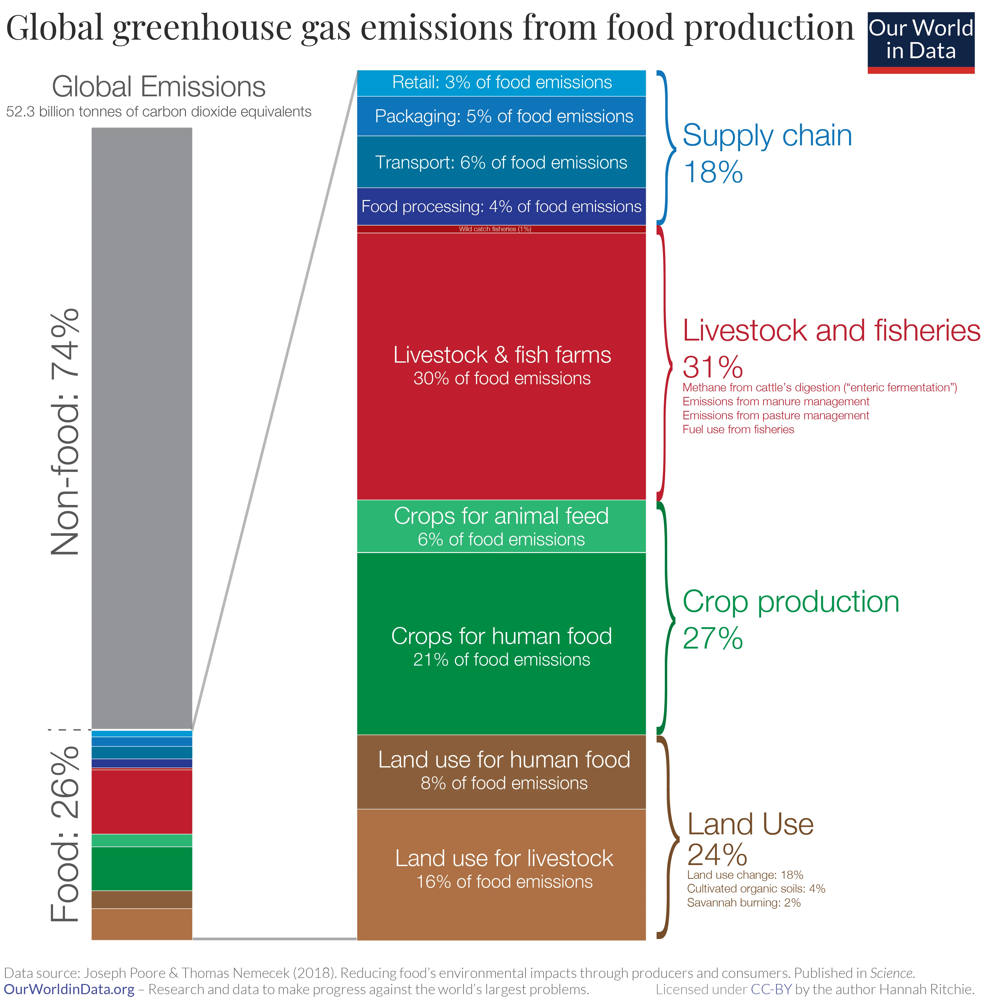

Quelque 94 % de la biomasse des mammifères terrestres dans le monde - à l'exclusion des humains - est constituée d'animaux d'élevage, alors que les mammifères sauvages n'en représentent déjà plus que 6 %(1). L'élevage, l'agriculture et l'aquaculture sont considérés comme une menace pour 24001 des 28 338 espèces considérées comme menacées par l'UICN, principalement parce qu'ils contribuent à la destruction des habitats naturels.
L'élevage, y compris les fermes et les plantations utilisées pour nourrir les animaux d'élevage, représente 77% de la superficie mondiale des terres utilisées pour la production alimentaire. Cependant, elle ne fournit que 18 % des calories et 37 % des protéines nécessaires à la population mondiale. En revanche, les cultures destinées à la consommation humaine ne représentent que 23 % de la surface agricole, mais fournissent 82 % des calories et 63 % des protéines.
*Données pour 2019
"Comme local" est une recommandation que nous ressentons souvent. Bien que cela puisse paraître logique à première vue, il s'agit d'un conseil très inefficace pour réduire notre impact sur l'environnement. Le transport des denrées alimentaires ne représente que 6 % du total des émissions de gaz à effet de serre du secteur alimentaire. Le type de nourriture que nous mangeons est donc beaucoup plus important que l'endroit d'où elle vient. Une étude menée en 2008 aux États-Unis a conclu que le remplacement de la viande par des alternatives végétales une fois par semaine avait plus d'impact que l'achat de tous les aliments au kilomètre zéro tous les jours de la semaine.
On estime que la production, le transport et la vente d'un kilo de poulet libèrent l'équivalent d'environ 6 kg de CO2. En comparaison, les aliments végétaux tels que le blé, le maïs, les légumes racines, les noix, les pois, les tomates, les pommes, les bananes, les agrumes. . . rejettent entre 0,3 et 1,4, soit entre quatre et vingt fois moins.
La viande, les œufs et les produits laitiers représentent 83% du total des émissions de gaz à effet de serre provenant de l'alimentation européenne. En comparaison, les fruits, les légumes, les légumineuses et les noix représentent ensemble 4 %, les céréales 4 % et les légumes-racines 1,5 %. Les 7,5 % restants proviennent des huiles et des boissons.
Selon l'Organisation des Nations Unies, l'élevage et la pisciculture sont responsables d'environ 14,5 % des émissions mondiales de gaz à effet de serre, contre 13 % des émissions provenant des transports. En d’autres termes, la consommation de viande, de poisson, d’œufs et de produits laitiers contribue davantage au réchauffement climatique que toutes les voitures, avions, bateaux, camions et trains réunis.
Selon les Nations unies, les trois quarts des zones de pêche du monde sont surexploitées ou gravement appauvries en raison de la surpêche. Aujourd'hui, la pêche est principalement pratiquée à l'aide de filets massifs et non sélectifs, ce qui signifie qu'en plus des poissons capturés, des animaux d'espèces non ciblées sont également capturés. On estime que plus de 300 000 dauphins, baleines et bélugas sont tués chaque année en raison des dommages collatéraux causés par la pêche.
La plupart des poissons d'élevage sont nourris avec des farines de poisson obtenues à partir d'énormes quantités de petits poissons capturés dans les mers et les océans, ce qui accélère considérablement leur processus d'extinction.
Selon une étude récente menée dans l'océan Pacifique sur une superficie de 1,6 million de kilomètres, 46 % du poids total des débris marins ramassés sont constitués de filets de pêche, les 54 % restants étant également constitués d'autres matériaux de pêche. Les bouteilles, les bouchons, les sacs et les pailles en plastique ne représentent que 8%.
1. Bar-On, Y. M., Phillips, R., & Milo, R. (2018). The biomass distribution on Earth.
Proceedings of the National Academy of Sciences, 115(25), 6506-6511.
2. iucnredlist.org
3. Poore, J., & Nemecek, T. (2018). Reducing food’s environmental impacts through producers and consumers.
Science, 360(6392), 987-992.
4. Weber, C. L., & Matthews, H. S. (2008). Food-miles and the relative climate impacts
of food choices in the United States. Environmental Science & Technology.
5. Sandström, V., Valin, H., Krisztin, T., Havlík, P., Herrero, M., & Kastner, T. (2018). The
role of trade in the greenhouse gas footprints of EU diets. Global Food Security, 19, 48-55.
6. fao.org
7. press.un.org
8. Catching fish, not flukes and flippers
9. Sustainability of Fish Feed in Aquaculture
10. Lebreton, L., Slat, B., Ferrari, F. et al. Evidence that the Great Pacific Garbage Patch is
rapidly accumulating plastic. Sci Rep 8, 4666 (2018).
- Informations relatives à l'incidence sur l'environnement de différents types de denrées alimentaires
- Documentaire Cowspiracy sur l'impact environnemental de l'élevage dans Netflix ou dans YouTube.
- Documentaire Seaspiracy sur l'impact environnemental de la pêche dans Netflix